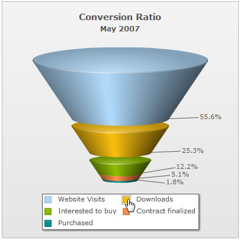
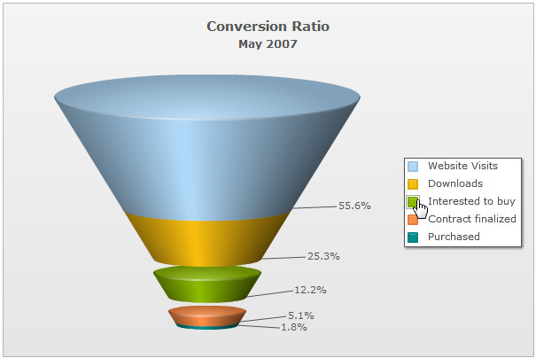

The funnel chart from FusionWidgets pack allows you to configure various properties using XML/JSON data. Here, we'll see a few of them:
- Drawing 2D funnel with customized border properties
- Adding shadow to 2D funnel
- Showing labels at center
- Showing labels in legend
- Drawing filled funnel slices
- Drawing all slices with same slant angle (when plotting streamlined data)
- Showing values as percentage of previous value
- Slicing out individual funnel slices
Let's see each of them one by one.
When you draw a normal funnel chart, it renders as 3D, with a context menu allowing you to switch between 2D & 3D mode. However, if you intend to render the funnel as 2D itself, you can set:
This will result in:
When in 2D mode, you can customize the border properties of the funnel using:
This will result in:
<chart caption="Conversion Ratio" subcaption="May 2007" showPercentValues="1" decimals="1" baseFontSize="11" useSameSlantAngle="1" is2D="1" showPlotBorder="1" plotBorderThickness="2">
<set label="Website Visits" value="385634"/>
<set label="Downloads" value="175631"/>
<set label="Interested to buy" value="84564"/>
<set label="Contract finalized" value="35654"/>
<set label="Purchased" value="12342"/>
<styles>
<definition>
<style type="shadow" name="myShadow"/>
</definition>
<application>
<apply toObject="DATAPLOT" styles="myShadow"/>
</application>
</styles>
</chart>
{
"chart": {
"caption": "Conversion Ratio",
"subcaption": "May 2007",
"showpercentvalues": "1",
"decimals": "1",
"basefontsize": "11",
"usesameslantangle": "1",
"is2d": "1",
"showplotborder": "1",
"plotborderthickness": "2"
},
"data": [
{
"label": "Website Visits",
"value": "385634"
},
{
"label": "Downloads",
"value": "175631"
},
{
"label": "Interested to buy",
"value": "84564"
},
{
"label": "Contract finalized",
"value": "35654"
},
{
"label": "Purchased",
"value": "12342"
}
],
"styles": {
"definition": [
{
"type": "shadow",
"name": "myShadow"
}
],
"application": [
{
"toobject": "DATAPLOT",
"styles": "myShadow"
}
]
}
}
You can opt to show the funnel labels at center of the chart using:
This will result in:
Starting FusionWidgets XT, you can choose to place the labels in a separate legend box. You can click on the legend items to slice in and slice-out the respective funnel item as shown below:

To show the legend (and hide the labels beside the funnel) set:
<chart .. showLegend='1' showLabels='0'...>
{ "chart" : {... "showlegend" : "1", "showlabels": "0" ... } }
You can also place the legend at the right by setting the value of the legendPosition attribute to RIGHT:
<chart .. showLegend='1' legendPosition='RIGHT' showLabels='0'...>
{ "chart" : {... "showlegend" : "1", "legendposition": "RIGHT", "showlabels": "0" ... } }
The legend will be placed on the right as shown below:
By default, in a 3D funnel chart, the slices show up as hollow ones. You can make them filled by setting:
This will result in:


However, if you need the same slant angle for all of them, you can set:
This will result in:
When showing values in percentage for each slice, you can ask the chart to calculate the percentage value of this slice w.r.t previous slice (instead of the first slice) by setting:
This will result in:
You can slice out individual funnel slices by setting:
This will result in (here, we've sliced the yellow slice):